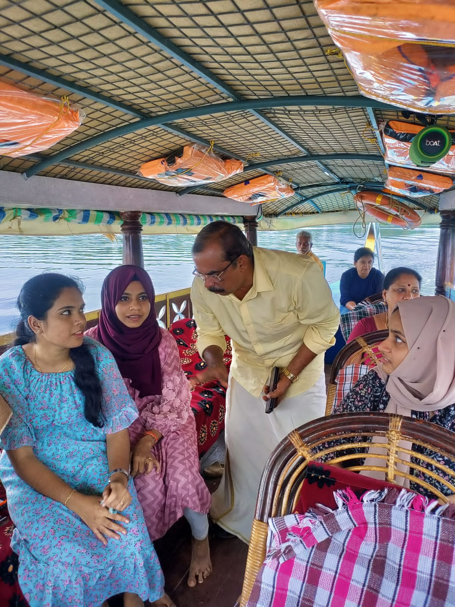
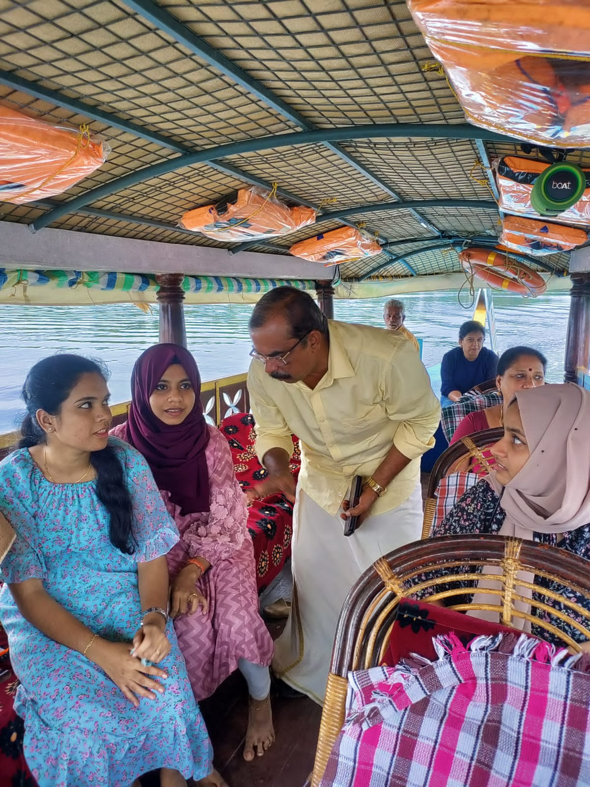

Munroe, The Beauty
Munroe Island is a stunning destination located in the Kollam district of Kerala. It is a network of eight
islets situated at the confluence of Ashtamudi Lake and Kallada River. Often referred to as the 'Hidden
Venice of India' and 'Hidden Pearl of the Backwaters', the island is named after Resident Colonel John
Munro of the former Princely State of Travancore.
The island is an unspoiled paradise, surrounded by serene backwaters and diverse flora and fauna. Visitors
can witness the coir retting and weaving process, observe fishing and prawn feeding, and watch the narrow
canals and waterways. They can also see coconut farms, mangrove plants, and the beautiful tiny islands
along the lake shore. Munroe Island is an ideal destination for those seeking a tranquil escape in the lap
of nature.
ABOUT US
Little Munroe Bay is a Shikkara and Canoe service located in Munroe Island, Kollam, Kerala. Shikkara boats are smaller than house boats and have a roof, with all four sides open to allow for the gentle backwater breeze. They can navigate through narrow canals, taking you to the heart of Munroe Island. The canoe glides through the stunningly beautiful palm tree-lined channels of the island. Our team is experienced and dedicated, and our backwater cruise tours are organized with your safety as our top priority. Our boats are well-equipped with security equipment and maintain a highly hygienic atmosphere. Our commitment is to provide the best customer experience in a professional and responsible manner. We are proud of our happy clients, who recommend us to their family, friends, and colleagues. Today, more than half of our clients come from such referrals and repeat business. Come explore the soul of Munroe Island with us.
Testimonials
"Hear What Our Satisfied Customers Have to Say - Experience the Best in Boating Services"
Gallery
Moments of Happiness

 
